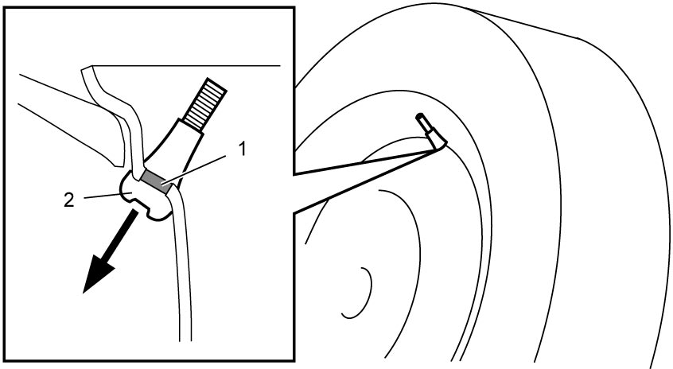
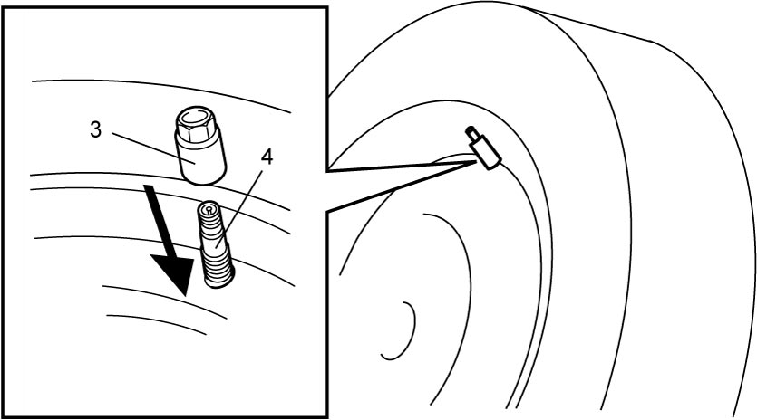
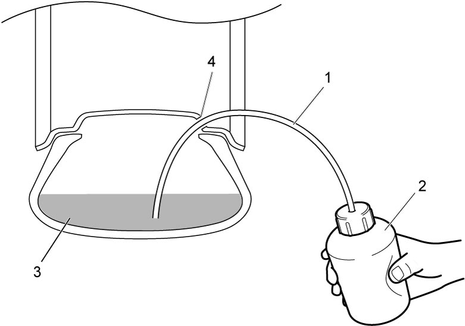

2D
| Treatment of Flat Tire Repaired with Sealant |
Damage to health may result if you do not observe the precautions when handling flat tire repaired with flat tire repair sealant.
Observe the precautions in Precautions for Emergency Flat Tire Repair Kit (If Equipped) when handling the flat tire.
1)Remove wheel and tire repaired with the sealant.
2)Release air from the tire slowly by loosening valve core.
3)For vehicle without TPMS, pull valve stem and cut rubber (1) of the valve to thereby let remainder portion (2) drop into inside of the wheel.
 For vehicle with TPMS, remove the pressure sensor mounting nut (3) to thereby let the pressure sensor (4) drop into inside of the wheel.
For vehicle with TPMS, remove the pressure sensor mounting nut (3) to thereby let the pressure sensor (4) drop into inside of the wheel.

 "Expand image")

 "Expand image")
4)Insert hose (1) into tire through valve hole (4) of wheel and remove the sealant (3) from inside the tire using container (2) such as a syringe.
NOTE:
If hose and container are not available, without removing the sealant, proceed to Step 5). In this case, remove the tire carefully not to spill sealant in the tire.

 "Expand image")
5)Remove the tire from the wheel using tire changer. 
6)Remove flat tire repair sealant from the tire and wipe off remaining sealant from the tire and the wheel.
7)Replace the tire with new one. However, if the tire damage is slight and the puncture is judged to be repairable, repair it.
8)For vehicle without TPMS, install a new valve to wheel.
For vehicle with TPMS, install a new tire pressure sensor to wheel.
For vehicle with TPMS, install a new tire pressure sensor to wheel.
9)Install new or repaired tire to wheel and check that no leakage exists, and then adjust tire pressure to the specification.
10)Install wheel fitted with tire to vehicle.